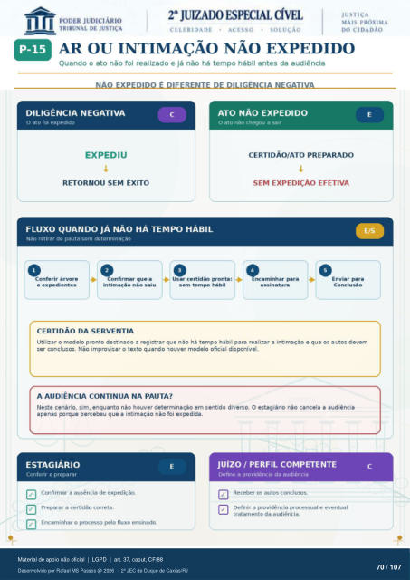

Transcrição automática em português, ainda não revisada. Confira grafia, prazos e termos jurídicos na imagem e no PDF antes de utilizar.
AR OU INTIMAÇÃO NÃO EXPEDIDO
Quando o ato não foi realizado e já não há tempo hábil antes da audiência
NAO EXPEDIDO E DIFERENTE DE DILIGENCIA NEGATIVA
DILIGÊNCIA NEGATIVA
O ato foi expedido
EXPEDIU
RETORNOU SEM ÊXITO
FLUXO QUANDO JÁ NÃO HÁ TEMPO HÁBIL
Não retirar de pauta sem determinação
ATO NÃO EXPEDIDO
O ato não chegou a sair
CERTIDÃO/ATO PREPARADO
SEM EXPEDIÇÃO EFETIVA
o Encaminhar para
assinatura o
Conferir árvore Confirmar que a
intimação saiu Usar certidão pronta:
sem tempo hábil Enviar
Conclusao
CERTIDÃO DA SERVENTIA
Utilizar o modelo pronto destinado a registrar que não há tempo hábil para realizar a intimação e que os autos devem ser conclusos. Não improvisar o texto quando houver modelo oficial disponível.
A AUDIÊNCIA CONTINUA NA PAUTA?
Neste cenário, sim, enquanto não houver determinação em sentido diverso. O estagiário não cancela a audiência apenas porque percebeu que a intimação não foi expedida.
ESTAGIÁRIO
Conferir e preparar Confirmar a ausência de expedição.
preparar a certidão correta. Encaminhar o pmcesso pelo fluxo ensinado.
JUizo / PERFIL COMPETENTE Define a providência da audiência
Receber os autos conclusos. Definir a providência processual e eventual
tratamento da audiência.
Ver também o infográfico original (página 70)
